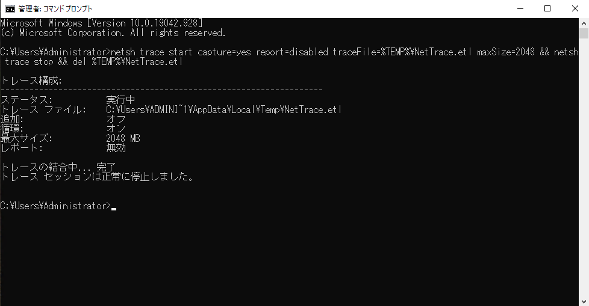
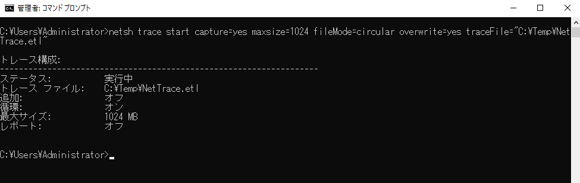
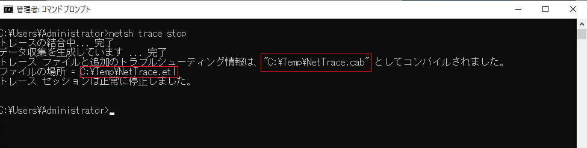
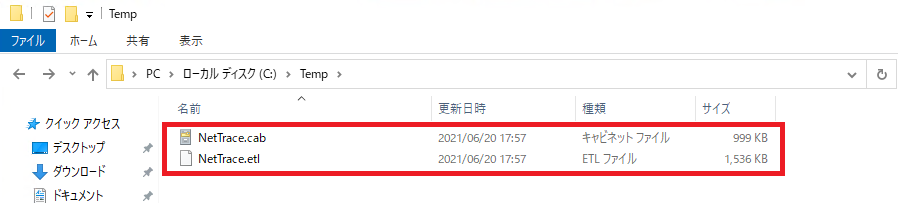

ネットワークトラブルの原因究明のためにパケットキャプチャーを実施いただく際の手順です。
Windows 標準のコマンドを使って実施いただけます。追加ソフトウェアのインストールは不要です。
採取対象については担当者がご案内いたします。
パケットキャプチャーを格納する一時フォルダを事前に作成するようお願いいたします。(C:\Tempなど)
管理者権限でコマンド プロンプトを開きます。
コマンドプロンプトで以下を実行します。(初回のトレース採取に失敗することがあるため、その問題を回避する手順です。
以下のような画面が出れば問題ありません。
1 | netsh trace start capture=yes report=disabled traceFile=%TEMP%\NetTrace.etl maxSize=2048 && netsh trace stop && del %TEMP%\NetTrace.etl |

続けて、以下のコマンドを実行します。 [一時フォルダ]の箇所は適宜書き換えください。
最大サイズ 1024 MB を上限として、循環形式でトレース ログを収集します。
以下のような画面が出力されます。
1 | netsh trace start capture=yes maxsize=1024 fileMode=circular overwrite=yes traceFile="[一時フォルダ]\NetTrace.etl" |

以下のコマンドを実行します。
1 | netsh trace stop |
“ファイルの場所” として表示されている NetTrace.etl ファイル、及び同じフォルダ内の NetTrace.cab の 2 つのファイルを弊社までご提供ください。

